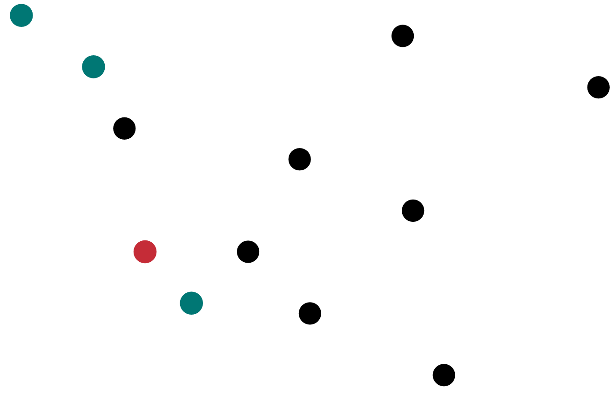
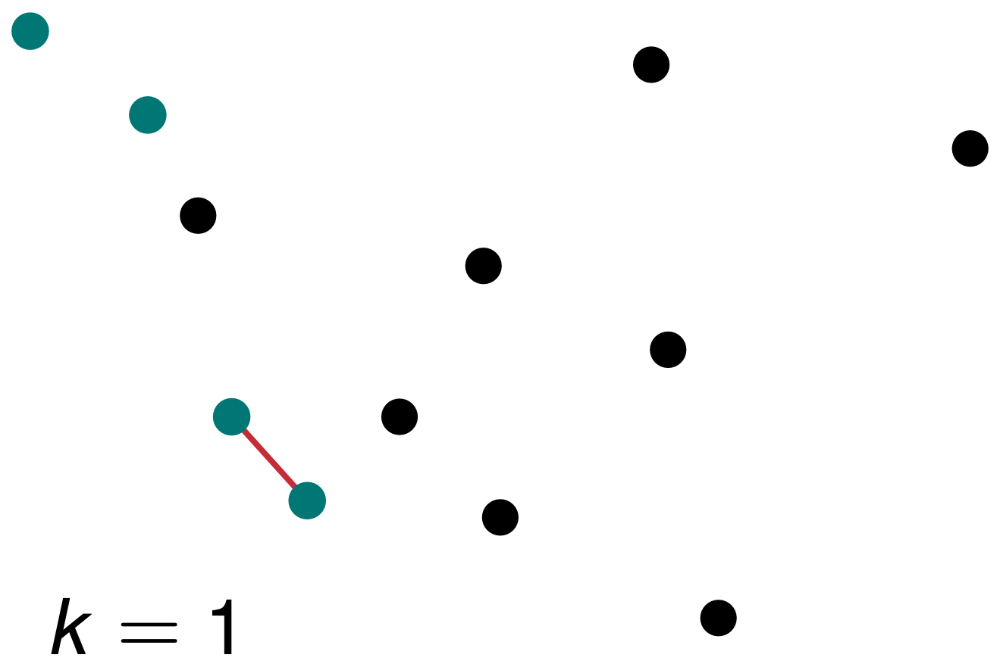
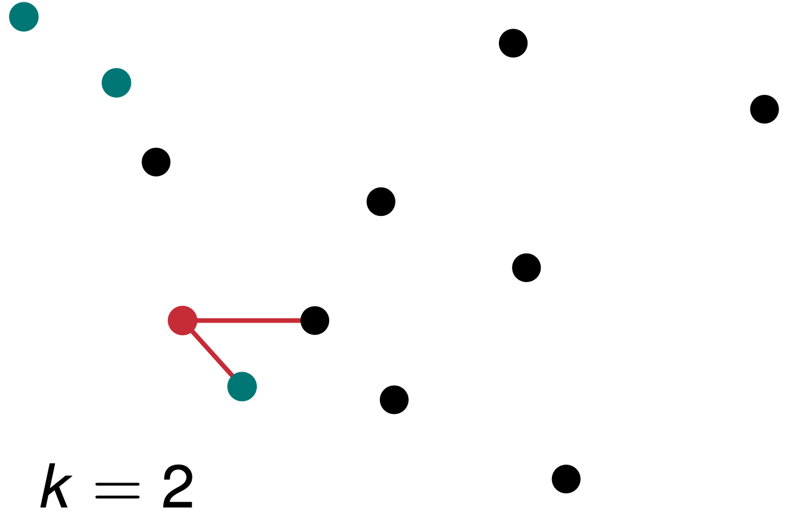
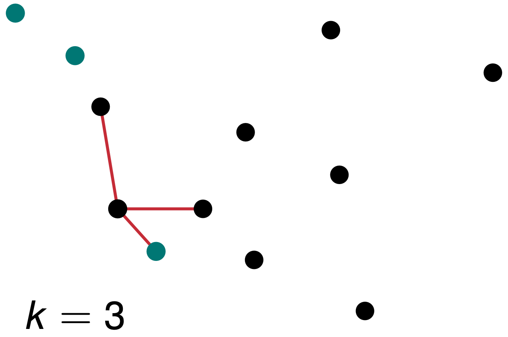
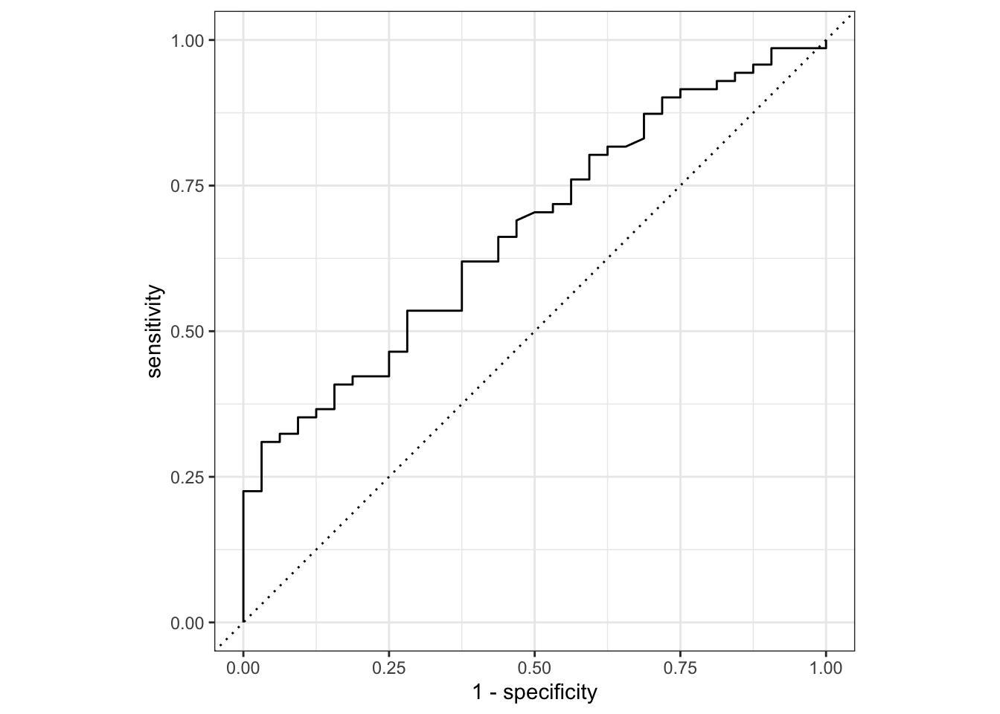
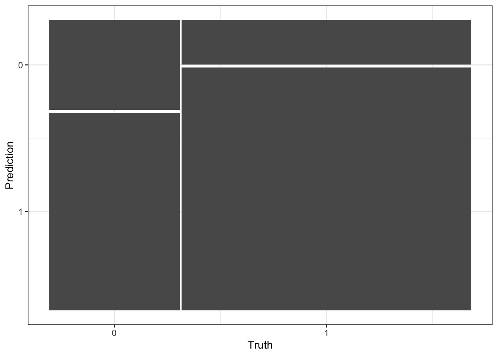
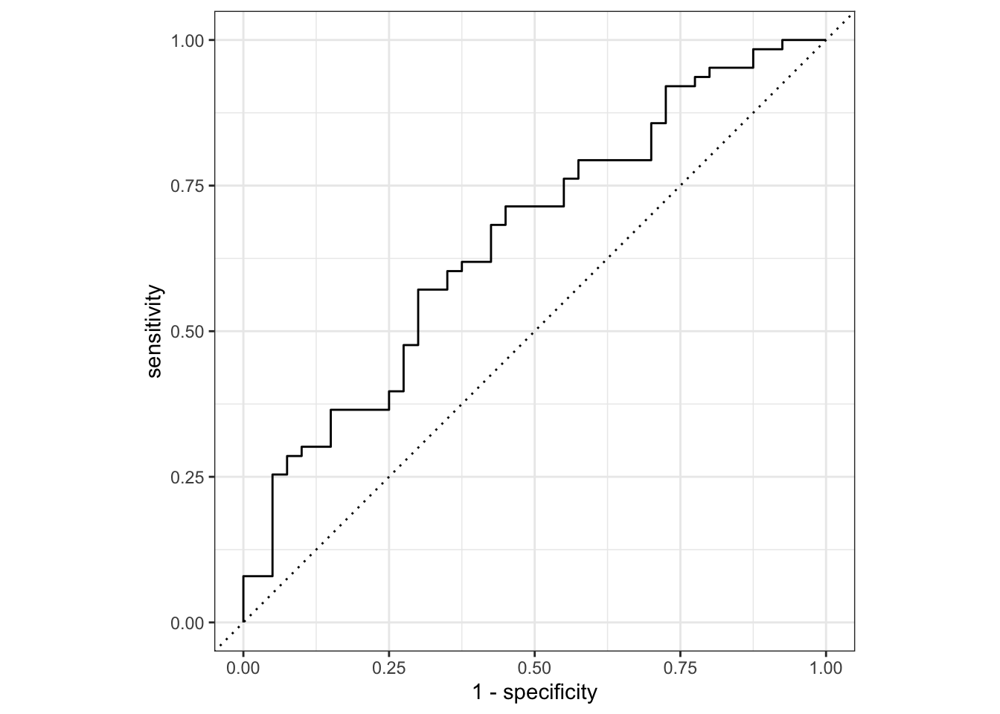
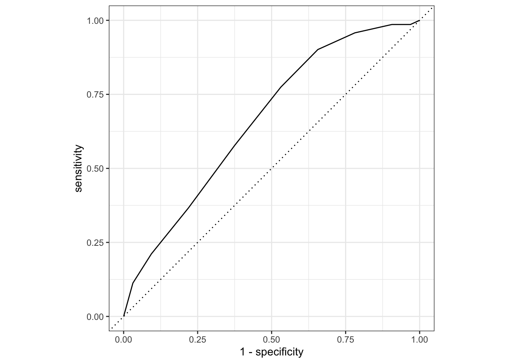

52 \(k\) nearest neighbor
Version vom November 29, 2022 um 20:30:27

Was macht der \(k\) nächste Nachbarn Algorithmus (eng. k nearest neighbor, abk. k-NN), wenn wir ihn verwenden? Der Algorithmus ist ein sehr einfacher Algorithmus, der auf den Abständen zu den benachbarten Beobachtungen basiert. Wir wollen also für eine neue Beobachtung den Infektionsstatus vorhersagen. Um diese Vorhersage zu bewerkstelligen nutzen wir die \(k\)-nächsten Nachbarn zu dieser neuen Beobachtung. Wenn die Mehrzahl der \(k\)-nächsten Nachbarn den Infektionsstatus \(1\) hat, dann vergeben wir auch der neuen Beobachtung den Infektionsstatus \(1\). Wenn dies nicht der Fall ist, dann erhält die neue Beobachtung den Infektionsstatus \(0\).
52.1 Genutzte R Pakete für das Kapitel
Wir wollen folgende R Pakete in diesem Kapitel nutzen.
pacman::p_load(tidyverse, tidymodels, magrittr, see,
caret, kknn, MachineShop, conflicted)
conflict_prefer("select", "dplyr")
conflict_prefer("filter", "dplyr")
conflict_prefer("mutate", "dplyr")
conflict_prefer("extract", "magrittr")
conflict_prefer("fit", "parsnip")
conflict_prefer("contr.dummy", "kknn")
##
set.seed(2025429)Am Ende des Kapitels findest du nochmal den gesamten R Code in einem Rutsch zum selber durchführen oder aber kopieren.
52.2 Daten
In dieser Einführung nehmen wir die infizierten Ferkel als Beispiel um einmal die verschiedenen Verfahren zu demonstrieren. Ich füge hier noch die ID mit ein, die nichts anderes ist, als die Zeilennummer. Dann habe ich noch die ID an den Anfang gestellt.
pig_tbl <- read_excel("data/infected_pigs.xlsx") %>%
mutate(pig_id = 1:n(),
infected = as_factor(infected)) %>%
select(pig_id, infected, everything()) In Tabelle 52.1 siehst du nochmal einen Auschnitt aus den Daten. Wir haben noch die ID mit eingefügt, damit wir einzelne Beobachtungen nachvollziehen können.
| pig_id | infected | age | sex | location | activity | crp | frailty | bloodpressure | weight | creatinin |
|---|---|---|---|---|---|---|---|---|---|---|
| 1 | 1 | 61 | male | northeast | 15.31 | 22.38 | robust | 62.24 | 19.05 | 4.44 |
| 2 | 1 | 53 | male | northwest | 13.01 | 18.64 | robust | 54.21 | 17.68 | 3.87 |
| 3 | 0 | 66 | female | northeast | 11.31 | 18.76 | robust | 57.94 | 16.76 | 3.01 |
| 4 | 1 | 59 | female | north | 13.33 | 19.37 | robust | 56.15 | 19.05 | 4.35 |
| 5 | 1 | 63 | male | northwest | 14.71 | 21.57 | robust | 55.38 | 18.44 | 5.27 |
| 6 | 1 | 55 | male | northwest | 15.81 | 21.45 | robust | 60.29 | 18.42 | 4.78 |
| … | … | … | … | … | … | … | … | … | … | … |
| 407 | 1 | 54 | female | north | 11.82 | 21.5 | pre-frail | 55.32 | 19.75 | 3.92 |
| 408 | 0 | 56 | male | west | 13.91 | 20.8 | frail | 58.37 | 17.28 | 7.44 |
| 409 | 1 | 57 | male | northwest | 12.49 | 21.95 | pre-frail | 56.66 | 16.86 | 2.44 |
| 410 | 1 | 61 | male | northwest | 15.26 | 23.1 | robust | 57.18 | 15.55 | 3.08 |
| 411 | 0 | 59 | female | north | 13.13 | 20.23 | robust | 56.64 | 18.6 | 3.41 |
| 412 | 1 | 63 | female | north | 10.01 | 19.89 | robust | 57.46 | 18.6 | 4.2 |
Gehen wir jetzt mal die Wörter und Begrifflichkeiten, die wir für das maschinelle Lernen später brauchen einmal durch.
52.3 \(k\)-NN theoretisch
Im Folgenden betrachten wir uns den \(k\)-NN Algorithmus einmal ganz simpel. Dafür nutzen wir die Abbildung 52.1 als Startpunkt. Wir haben dort 11 Beobachtungen im Trainingsdatensatz dargestellt. Wir finden in dem Trainingsdatensatz acht infizierte Personen soiwe drei gesunde Personen. Darüber hinaus eine neue rote Beobachtung. Gegeben den Traingsdaten, welchen Status wollen wir der neuen roten Beobachtung geben?

In der Abbildung 52.2 sehen wir die Klassifizierung nach \(k = 1\). Wir nehmen daher die \(k = 1\) nächsten Beobachtungen und bestimmen daran den neuen Status der roten Beobachtung. Wenn wir nur die eine nächste Beobachtung als Nachbarn betrachten, so setzen wir den Status unser neuen Beobachtung auf grün und daher gesund.

Nun können wir das Spiel weiterspielen und wählen in der Abbildung 52.3 die \(k = 2\) nächsten Nachbarn zu unser neuen Beobachtung aus. Wir erhalten jetzt ein Unentschieden. Wir haben eine schwarze Beobachtung und eine grüne Beobachtung als \(k=2\) nächste Nachbarn. Wir können hier keine Entscheidung treffen. Eine gerade Anzahl an nächsten Nachbarn ist prinzipiell nicht anzuraten. Ich empfehle immer eine ungerade Anzhl. Auch wenn es natürlich auch für eine gerade Anzahl eine algorithmische Lösung gibt. Das ist aber weit über die Anwendung hinaus und geht in die Tiefe des Algorithmus, die wir hier nicht behandeln wollen.

In der Abbildung 52.4 sehen wir, dass wir jetzt \(k = 3\) Nachbarn betrachten. Damit haben wir auf jeden Fall wieder eine Entscheidung. Wenn auch hier nur sehr knapp, da wir ja zwei schwarze und einen grünen Nachbarn haben. Wir klassifizieren dennoch die neue Beobachtung als schwarz.

Soweit so gut. Und wie entscheide ich jetzt was weit weg ist? Wenn wir uns mit dem \(k\)-NN Algorithmus näher beschäftigen würden, dann werden wir feststellen, dass es eine Vielzahl an Abstandsmaßen gibt. Wir du dir vorstellen kannst, kann man die Entfernung zwischen zwei Punkten als den absoluten Abstand messen. Oder aber als den quadratischen Abstand. Es wäre auch möglich einen gewichteten Abstand einzuführen, so dass nähere Beobachtungen einen größeren Einfluss auf die Vorhersage haben als weiter entfernte Beobachtungen. Dann würden wir auch das Problem von geraden \(k\) Anzahlen lösen. Du musst dann leider in den jeweiligen R Paketen schauen, welche Optionen es dort geben mag. Wir werden uns hier auf eins der R Pakete mit kknn konzentrieren.
52.4 Klassifikation
Schauen wir uns als erstes eine simple Klassifikation mit dem \(k\)-NN Algorithmus an. Wir brauchen dafür erstmal einen Trainings- und Testdatensatz. Wir trainieren dann den \(k\)-NN Algorithmus auf den Trainingsdaten. Wenn wir dann mit dem Modell zufrieden sind, schauen wir, ob unserer Modell auch auf den Trainingsdaten funktioniert. Wir trennen daher die Daten mit \(3/4\) Trainingsdaten und \(1/4\) Testdaten auf. Wir nutzen dazu die Funktion initial_split(). Es gibt auch andere Möglichkeiten sich den Split in Trainings- und Testdatensatz zu erstellen, aber so geht es relativ einfach und schnell. Im Kapitel 50 kannst du dir auch noch eine Alternative anschauen.
pig_data_split <- initial_split(pig_tbl, prop = 3/4)Jetzt haben wir in dem Objekt pig_data_split die beiden Datensätze vorliegen. Wir ziehen uns nun die Trainingsdaten und die Testdaten in zwei neue Objekten heraus. Wir werden jetzt im weiteren Verlauf nur die Trainingsdaten nutzen. Die Testdaten nur einmal ganz am Ende, wenn wir die ROC-Kurven darstellen.
pig_train_data <- training(pig_data_split)
pig_test_data <- testing(pig_data_split)Wir brauchen wieder unser Rezept, in dem wir definieren, was an Schritten im Preproessing durchgeführt werden soll. Zuerst definieren wir unser Modell in der Funktion recipe(). Wir haben als unser Label die Variable infected, also ob ein Ferkel infiziert ist oder eben nicht. Wir nehmen dann die restlichen Variablen als Features mit ins Modell.
Nachdem wir dann das Rezept haben, wollen wir noch alle numerischen Prädiktoren, also die Features, auf die Spannweite von \([0;1]\) bringen. Dann werden noch alle nominalen Variablen in Dummies kodiert. Abschließend entfernen wir dann noch eventuelle Variablen, die kaum noch eine Varianz vorliegen haben. Das soll es für diese Anwendung des \(k\)-NN Algorithmus hier erstmal reichen.
pig_rec <- recipe(infected ~ age + sex + location + activity + crp +
frailty + bloodpressure + weight + creatinin,
data = pig_train_data) %>%
step_range(all_numeric_predictors(), min = 0, max = 1) %>%
step_dummy(all_nominal_predictors()) %>%
step_nzv(all_predictors())Jetzt kommen wir zu dem Modell. Wir wollen den \(k\)-NN Algorithmus rechnen und nutzen deshalb die Funktion nearest_neighbor(). Wir wollen dann neighbors = 11 in dem Algorithmus nutzen. In der Funktion heißt dann das \(k\) eben neighbors. Ist zwar nicht schön, aber das kennen wir ja schon alles von anderen Funktionen. Dann nutzen wir die kknn Engine und wollen eine Klassifikation rechnen. Wir rechnen eine Klassifikation, da wir als Outcome die Variable infected vorliegen haben und diese Variable binär ist.
knn_mod <- nearest_neighbor(neighbors = 11) %>%
set_engine("kknn") %>%
set_mode("classification") Dann haben wir also unser Modell definiert. Auch haben wir dann auch das Rezept, was wir ausführen wollen. Wir kombinieren jetzt das Modell zusammen mit dem Rezept in einen Workflow durch die Funktion workflow(). Bis jetzt haben wir noch nichts gerechnet. Das Rechnen kommt jetzt im nächsten Schritt.
pig_wflow <- workflow() %>%
add_model(knn_mod) %>%
add_recipe(pig_rec)Wir wollen jetzt den Workflow auf den Trainingsdaten ausführen. Dazu nutzen wir die Funktion fit(). Da es leider sehr viele R Pakete gibt, die die Funktion fit() implementiert haben, lege ich mit parsnip::fit() definitiv fest, dass wir die fit() Funktion aus dem R Paket parsnip nutzen wollen.
pig_fit <- pig_wflow %>%
parsnip::fit(pig_train_data)Jetzt haben wir den Fit des Modells vorliegen. Mit dem Modell werden wir jetzt schauen, wie gut wir das Outcome infected in den Testdaten vorhersagen können. Wir nutzen dazu die Funktion augment(). Die Funktion verbindet den Testdatensatz mit den Information aus der Vorhersage. Wie immer brauchen wir nicht alles, was wir wiedergegeben kriegen. Daher wählen wir nur die Spalte infected, da stehen ja unsere wahren Werte für den Infektionsstatus drin und die Vorhersagen aus dem Modell. Die Vorhersagen des Modells haben alle ein pred im Namen, also können wir die Funktion matches() nutzen um diese Spalten auszuwählen.
pig_aug <- augment(pig_fit, pig_test_data ) %>%
select(infected, matches("pred"))
pig_aug# A tibble: 103 × 4
infected .pred_class .pred_0 .pred_1
<fct> <fct> <dbl> <dbl>
1 1 1 0.310 0.690
2 1 1 0.324 0.676
3 0 0 0.639 0.361
4 1 1 0.235 0.765
5 1 1 0.414 0.586
6 1 1 0.111 0.889
7 1 1 0 1
8 0 1 0.208 0.792
9 0 0 0.567 0.433
10 1 0 0.521 0.479
# … with 93 more rowsWir erhalten also den Infektionsstatus der Testdaten, den vorhergesagte Infektionsstatus aus dem \(k\)-NN Algorithmus, die Wahrscheinlichkeit für einen Infektionsstatus von 0 und die die Wahrscheinlichkeit für einen Infektionsstatus von 1. Damit haben wir alles zusammen um die ROC Kurven zu zeichnen. Dafür müssen wir die truth Spalte angeben und nennen in welcher Spalte die Wahrscheinlichkeit für die truth stehen. Wir definieren auch das event_level als second. Wenn die ROC Kurve auf der falschen Seite der Diagonalen ist, dann liegt es an dem falschen event_level. Die falsche Seite ist unterhalb der Diagonalen. Wenn die ROC also gespiegelt ist, dann versuche einmal event_level = "first" und erstelle die ROC Kurve neu.
pig_aug %>%
roc_curve(truth = infected, .pred_1, event_level = "second") %>%
autoplot()
Leider sieht die ROC Kurve nicht sehr gut aus. Eine sehr gute Vorhersage hat eine ROC Kurve die senkrecht ansteigt und dann waagerecht nach rechts verläuft. Die Fläche zwischen der Kurve und der Diagonalen sollte so große wie möglich sein.
Wenn wir jezt noch wissen wollen, wie groß die Fläche unter der Kurve ist (eng. area under the curve, abk. AUC) können wir die Funktion roc_auc() nutzen. Auch hier müssen wir das event_level richtig definieren. Wir kopieren hier den Code einfach rüber.
pig_aug %>%
yardstick::roc_auc(truth = infected, .pred_1, event_level = "second")# A tibble: 1 × 3
.metric .estimator .estimate
<chr> <chr> <dbl>
1 roc_auc binary 0.673Wie wir oben schon in der ROC Kurve gesehen haben ist ein Wert von \(0.673\) für die AUC auch nicht sehr gut. Wir liegen unter \(0.7\) und damit wären wir mit dem Modell nicht zufrieden. Wir müssten hier nochmal den \(k\)-NN Algorithmus tunen.
Auch können wir uns die Genauigkeit (eng. accuary) berechnen lassen. Die Accuary beschreibt wie viel Prozent des Infektionsstatus wir richtig vorhergesagt haben. Wenn wir eine Accuary von 1 haben, dann haben wir alle Label korrekt vorhergesagt. Die Spalte infected enthält die gleichen Werte wie die Spalte .pred_class aus der Funktion augment(). Wenn wir eine Accuary von 0 vorliegen haben, dann konnten wir kein Label richtig vorhersagen.
pig_aug %>%
yardstick::accuracy(truth = infected, .pred_class)# A tibble: 1 × 3
.metric .estimator .estimate
<chr> <chr> <dbl>
1 accuracy binary 0.680Wir auch die AUC ist auch die Accuary nicht besonders gut. Wir können nur ca. \(68\%\) der Label richtig vorhersagen. Damit haben wir nur jeden dritten Infektionsstatus richtig vorhergesagt. Die Accuary ist dann eben auch nicht gut, wie wir es schon dann oben bei der ROC Kurve gesehen haben. Wenigstens passen dann die wichtigsten Beurteilungskriterien inhaltlich zusammen.
Wir können auch ganz viele Beurteilungskriterien für die Klassifikation in einer Confusion matrix berechnen lassen. Dabei ist wichtig, das wir hier eine binäre Klassifikation vorliegen haben. Unser Infektionsstatus hat eben nur zwei Ausprägungen. Die Ferkel sind entweder krank oder gesund. Wir können die Funktion conf_mat() nutzen um uns die 2x2 Tabelle erstellen zu lassen.
pig_cm <- pig_aug %>%
conf_mat(infected, .pred_class)
pig_cm Truth
Prediction 0 1
0 10 11
1 22 60Wenn wir dann die Funktion summary() nutzen, dann erhalten wir insgesamt dreizehn Beurteilungskriterien für die Klassifikation. Wir gehen jetzt nicht auf alle Kriterien ein, das sprengt hier den Rahmen. Wir schauen uns die Kriterien dann in dem Kapitel 56 nochmal teilweise an. Wie immer musst du nicht alle Kriterien angeben sondern nur die Kriterien, die der Fragestellung dienen.
pig_cm %>% summary()# A tibble: 13 × 3
.metric .estimator .estimate
<chr> <chr> <dbl>
1 accuracy binary 0.680
2 kap binary 0.174
3 sens binary 0.312
4 spec binary 0.845
5 ppv binary 0.476
6 npv binary 0.732
7 mcc binary 0.181
8 j_index binary 0.158
9 bal_accuracy binary 0.579
10 detection_prevalence binary 0.204
11 precision binary 0.476
12 recall binary 0.312
13 f_meas binary 0.377Wie immer können wir uns eine 2x2 Tabelle auch mit einem Mosaicplot visualisieren. Das machen wir dann auch mit der Funktion autoplot(). Wir können natürlich auch die ggplot Funktionen nutzen, aber wir nutzen hier ja die Visualisierung nur um unsere Klassifikation zu überprüfen. Dann reicht auch die schnellere Variante.
autoplot(pig_cm, type = "mosaic") +
theme_bw() 
52.5 Resampling
folds <- vfold_cv(pig_train_data, v = 10)
folds# 10-fold cross-validation
# A tibble: 10 × 2
splits id
<list> <chr>
1 <split [278/31]> Fold01
2 <split [278/31]> Fold02
3 <split [278/31]> Fold03
4 <split [278/31]> Fold04
5 <split [278/31]> Fold05
6 <split [278/31]> Fold06
7 <split [278/31]> Fold07
8 <split [278/31]> Fold08
9 <split [278/31]> Fold09
10 <split [279/30]> Fold10pig_cv_fit <- pig_wflow %>%
fit_resamples(folds)collect_metrics(pig_cv_fit)# A tibble: 2 × 6
.metric .estimator mean n std_err .config
<chr> <chr> <dbl> <int> <dbl> <chr>
1 accuracy binary 0.718 10 0.0220 Preprocessor1_Model1
2 roc_auc binary 0.700 10 0.0357 Preprocessor1_Model152.6 Tuning
tune_spec <- nearest_neighbor(neighbors = tune(),
weight_func = tune(),
dist_power = tune()) %>%
set_engine("kknn") %>%
set_mode("classification")
tune_specK-Nearest Neighbor Model Specification (classification)
Main Arguments:
neighbors = tune()
weight_func = tune()
dist_power = tune()
Computational engine: kknn Ich nutze hier levels = 5 damit hier die Ausführung nicht so lange läuft. Das ist natürlich etwas zu wenig. Fange am besten mit levels = 5 an und schaue, wie lange das zusammen mit der Kreuzvalidierung dann dauert. Dann kannst du die Levels noch hochschrauben. Beachte aber, dass mehr Level nur mehr Zwischenschritte bedeutet. Jede Option hat eine Spanneweite range, die du dann anpassen musst, wenn du höhere Werte haben willst. In unserem Fall ist die Anzahl an neighbors auf 1 bis 10 gesetzt. Mehr Level würden nur mehr Zwischenschritte bedeuten. Deshalb habe ich die Spannweite auf 1 bis 20 Nachbarn gesetzt.
pig_grid <- grid_regular(neighbors(range = c(1, 20)),
weight_func(),
dist_power(),
levels = 5)Eigentlich ist eine 10-fache Kreuzvalidierung mit \(v=10\) besser. Das dauert mir dann aber hier im Skript viel zu lange. Deshalb habe ich hier nur \(v=5\) gewählt. Wenn du das Tuning rechnest, nimmst du natürlich eine 10-fach Kreuzvalidierung.
pig_folds <- vfold_cv(pig_train_data, v = 5)pig_tune_wflow <- workflow() %>%
add_model(tune_spec) %>%
add_recipe(pig_rec)Wenn du control_grid(verbose = TRUE) wählst, dann erhälst du eine Ausgabe wie weit das Tuning gerade ist.
pig_tune_res <- pig_tune_wflow %>%
tune_grid(resamples = pig_folds,
grid = pig_grid,
control = control_grid(verbose = FALSE))pig_tune_res %>%
collect_metrics() %>%
mutate(weight_func = as_factor(weight_func),
dist_power = as_factor(dist_power)) %>%
ggplot(aes(neighbors, mean, color = weight_func, linetype = dist_power)) +
theme_minimal() +
geom_line(alpha = 0.6) +
geom_point() +
facet_wrap(~ .metric, scales = "free", nrow = 2) +
scale_x_log10(labels = scales::label_number()) +
scale_color_okabeito()
pig_tune_res %>%
show_best("accuracy")# A tibble: 5 × 9
neighbors weight_func dist_power .metric .esti…¹ mean n std_err .config
<int> <chr> <dbl> <chr> <chr> <dbl> <int> <dbl> <chr>
1 15 rectangular 1.25 accuracy binary 0.692 5 0.0189 Prepro…
2 15 rectangular 1.75 accuracy binary 0.689 5 0.0311 Prepro…
3 15 rectangular 1.5 accuracy binary 0.683 5 0.0225 Prepro…
4 20 epanechnikov 1.5 accuracy binary 0.683 5 0.0154 Prepro…
5 20 rectangular 1.5 accuracy binary 0.679 5 0.0127 Prepro…
# … with abbreviated variable name ¹.estimatorbest_knn <- pig_tune_res %>%
select_best("accuracy")
best_knn# A tibble: 1 × 4
neighbors weight_func dist_power .config
<int> <chr> <dbl> <chr>
1 15 rectangular 1.25 Preprocessor1_Model059final_pig_wf <- pig_tune_wflow %>%
finalize_workflow(best_knn)
final_pig_wf ══ Workflow ════════════════════════════════════════════════════════════════════
Preprocessor: Recipe
Model: nearest_neighbor()
── Preprocessor ────────────────────────────────────────────────────────────────
3 Recipe Steps
• step_range()
• step_dummy()
• step_nzv()
── Model ───────────────────────────────────────────────────────────────────────
K-Nearest Neighbor Model Specification (classification)
Main Arguments:
neighbors = 15
weight_func = rectangular
dist_power = 1.25
Computational engine: kknn final_fit <- final_pig_wf %>%
last_fit(pig_data_split) final_fit %>%
collect_metrics()# A tibble: 2 × 4
.metric .estimator .estimate .config
<chr> <chr> <dbl> <chr>
1 accuracy binary 0.728 Preprocessor1_Model1
2 roc_auc binary 0.662 Preprocessor1_Model1final_fit %>%
collect_predictions() %>%
roc_curve(infected, .pred_1, event_level = "second") %>%
autoplot() +
theme_bw()
52.7 kmeans Clustering
Neben der Klassifikation können wir den \(k\)-NN Algorithmus auch nutzen um Gruppen in den Daten zu finden. Die Idee ist recht einfach. Wir geben \(k\) Cluster vor und der Algorithmus versucht nun die Daten so zu ordnen, dass sich \(k\) Cluster bilden. Je nach der Nähe der Beobachtungen zueinander lassen sich dann mehr oder minder klar abgegrenzte Cluster bilden. Das Problem an der Sache ist die Definition von \(k\) für die Anzahl der zu bildenden Cluster. Wir müssen nämlich selber festlegen, wie viele Cluster wir erwarten würden und der Algorithmus dann finden wird. Wenn wir \(k = 3\) der Funktion kmeans mitgeben, dann findet die Funktion drei Cluster. Auch wenn zwei mehr Sinn gemacht hätten. Daher müssen wir immer selber ausprobieren und uns die Daten visualisieren, ob das mit den Clustern so passt.
Für Clusterbildung können wir nur numerische Variablen verwenden. Daher müssen wir hier über die Funktion step_dummy alle nominalen Variablen wie Faktoren in eine \(0/1\)-Kodierung umwandeln. Das ist eine Einschränkung des kmeans Algorithmus.
pig_kmeans_rec <- recipe(infected ~ age + sex + location + activity + crp +
frailty + bloodpressure + weight + creatinin,
data = pig_train_data) %>%
step_dummy(all_nominal_predictors()) pig_dummy_tbl <- pig_kmeans_rec %>%
prep %>%
juice()kmeans_obj <- kmeans(pig_dummy_tbl, centers = 3)pig_dummy_tbl %>%
bind_cols(cluster = pluck(kmeans_obj, "cluster")) %>%
select(cluster, everything())# A tibble: 309 × 14
cluster age activity crp bloodpr…¹ weight creat…² infec…³ sex_m…⁴ locat…⁵
<int> <dbl> <dbl> <dbl> <dbl> <dbl> <dbl> <fct> <dbl> <dbl>
1 1 57 12.0 19.2 53.8 17.4 2.9 0 1 0
2 1 56 12.0 19.5 56.3 19.4 3.89 0 0 0
3 1 54 14.6 20.2 55.2 19.3 5.3 1 1 0
4 1 55 13.8 20.3 51.9 18.4 6.44 1 1 1
5 1 51 12.3 19.5 55.7 20.0 3.12 1 0 1
6 2 68 14.6 20.6 57.4 17.4 6.22 1 0 0
7 2 61 12.0 21.0 53.3 19.5 4.57 1 1 0
8 3 56 14.7 22.0 61.4 21.9 3.35 1 0 0
9 3 60 10.8 21.8 59.0 18.0 4.85 1 0 0
10 1 56 14.4 19.6 55.8 17.2 5.13 0 1 0
# … with 299 more rows, 4 more variables: location_northwest <dbl>,
# location_west <dbl>, frailty_pre.frail <dbl>, frailty_robust <dbl>, and
# abbreviated variable names ¹bloodpressure, ²creatinin, ³infected,
# ⁴sex_male, ⁵location_northeastDas R Paket embed bietet noch eine Vielzahl an weiteren Funktionen für die Erstellung von kategorialen Variablen. Bier musst du schauen, ob die Funktionen dann univariat sind und dhaer immer nur eine variable nutzen oder aber multivariat und daher mehrere Spalten simultan. Der Vorteil von kmeans ist ja, das der Algorithmus mehrere numerische Spalten für die Clusterbildung nutzen kann.